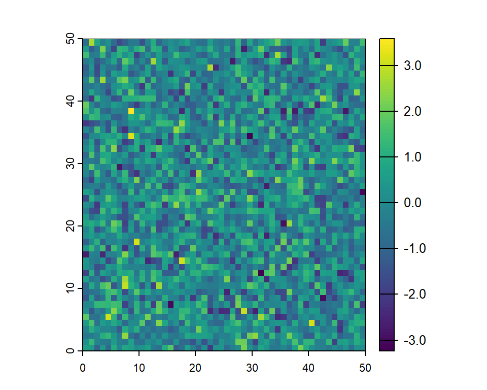
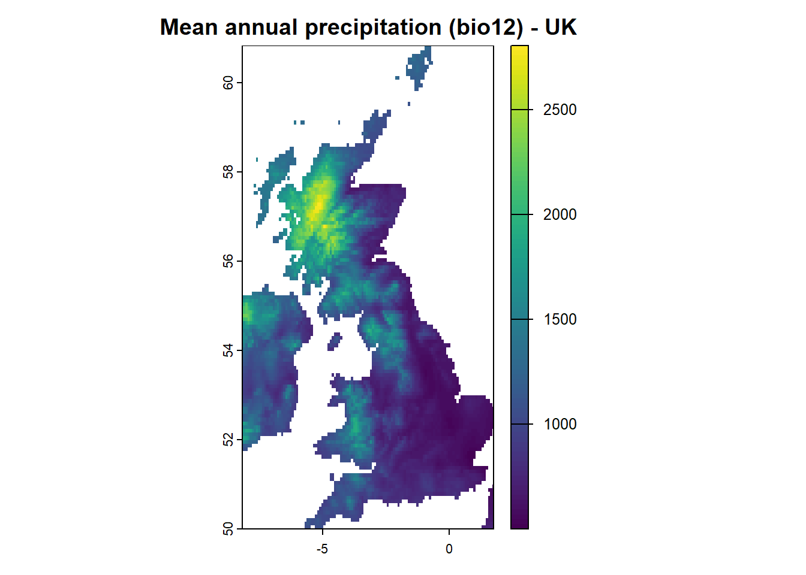
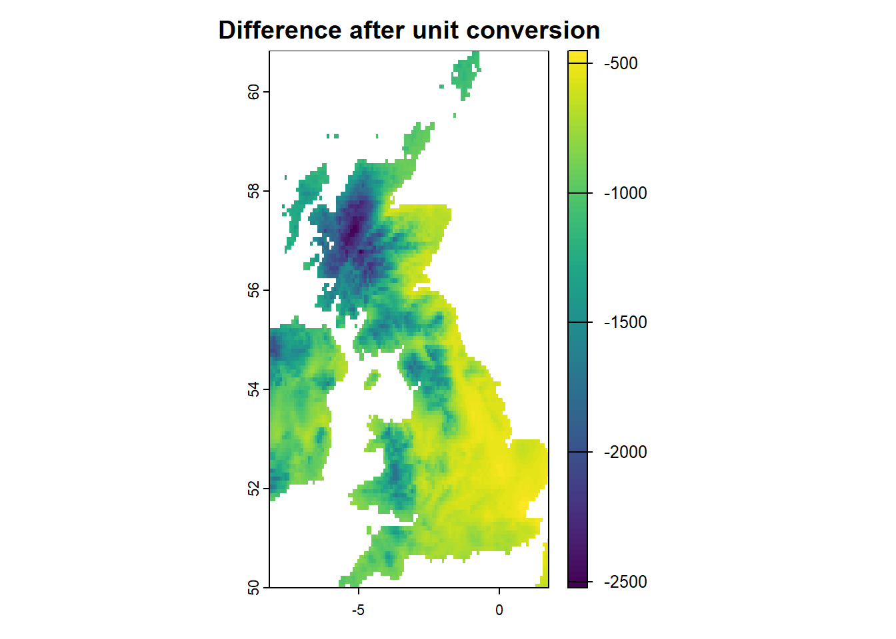

install.packages("package_name", dependencies = TRUE)Spatial Data in R
The natural world is fundamentally spatial. No organism exists in isolation; every ecological interaction occurs within a specific environmental context. Scientific observations gain meaning only when viewed within their spatial and temporal frame. Organisms are subject to the environmental conditions of their specific place and time. Whether prey is consumed and transformed through digestion or a leaf decomposes and returns to the soil, both processes follow fundamental pathways of pools and fluxes within the spatial and temporal fabric of life.
Spatial data form the foundation of geographical analysis and ecological modeling. In R, spatial data are typically managed in two primary formats: vector and raster.
Recognizing this perspective is essential in environmental science. Understanding nature’s patterns requires data that are organized with space and time in mind. Fortunately, modern data science in R offers an excellent toolkit for mapping these relationships and reminding us that even data, like organisms, thrive best in the right environment.
Beyond data structure, it is increasingly recognized that ecological observations must be interpreted within an appropriate spatiotemporal context. Species responses depend not only on local environmental conditions, but also on spatial patterns, temporal dynamics, and scale-dependent processes. Ignoring these dimensions can obscure ecological signals or lead to misleading inferences about species–environment relationships.
Adopting tidy data principles helps structure ecological data in ways that make relationships between observations, space, and time explicit. This not only supports more efficient and reproducible analysis, but also encourages conceptual clarity, enabling environmental scientists and practitioners to think carefully about what constitutes an observation, what variables describe it, and how they are interrelated. Such practices bridge ecological theory with modern data science workflows, enabling transparent model building, integration across datasets, and robust generalization of ecological insights. Ultimately, developing a general understanding of spatial data—and how it fits within broader data science concepts—is not a technical luxury, but a conceptual necessity. It strengthens one’s ability to formulate better ecological questions, design meaningful analyses, and translate data into insight about environmental change, biodiversity patterns, and ecosystem processes.
Vector data: Representing discrete features
Vector data are used to represent discrete spatial features — objects with clear boundaries — such as:
- Tree or animal locations
- Roads or rivers
- Country or habitat boundaries
Vector features are commonly represented in three geometries:
Points: Individual locations defined by coordinate pairs (e.g., species occurrences, weather stations).
Lines: Linear features such as roads, rivers, or migration paths, represented by sequences of connected points.
Polygons: Closed shapes that define areas like lakes, forest patches, or administrative zones.
Each vector feature can also include associated attributes, stored in a data table linked to the geometry.
These might include:
- species_name
- survey_date
- population_count
Raster Data: Representing Continuous Spatial Variables
Raster data represent continuous spatial phenomena — variables that vary smoothly across space — such as:
- Elevation
- Temperature
- Vegetation indices (e.g., NDVI)
A raster is composed of a grid of cells (also called pixels), where each cell holds a single value — either numeric (e.g., temperature) or categorical (e.g., land cover class).
Structure of raster data
Unlike vector data, raster datasets do not store coordinates for each cell. Instead, they rely on:
- Spatial extent – the geographic boundaries covered by the raster
- Resolution – the size of each cell (e.g., 25m x 25m)
- Origin – typically the top-left corner, which anchors the raster in space
These three components allow computational software like R to calculate the position of every cell efficiently.
TipInsight: Raster and pixels
Just like digital images, raster datasets can vary in resolution, which directly affects both spatial detail and file size.
Higher resolution means finer detail but larger file size, while lower resolution may be faster to process but less precise.
Why it matters
Understanding the differences, structures, and strengths of both vector and raster data is essential for:
- Spatial analysis
- Species distribution modeling
- Working with geographic information systems (GIS) in
R
Throughout this workshop, we’ll be using a number of GIS-focused packages in R. If any of these are not already installed on your system, you can install them using:
To work with spatial vector and raster data, we’ll use the terra package (for more information, see https://rspatial.org/index.html).
If you haven’t installed it yet, you can run the following command in your R console (skip this step if it’s already installed):
install.packages("terra", dependencies = TRUE)Once installed, load the package:
library(terra)1. Vector data in R - getting started
Vector data are at the core of spatial data analysis in ecology and environmental science. In R, vector data are typically managed using the terra or sf packages, both of which support reading, manipulating, and visualizing point, line, and polygon data.
The terra package (which we use in this workshop) handles spatial vector and raster data in an efficient, modern, and consistent way.
1.1 Points in space
What are spatial points?
Points are the simplest vector data geometry and are used to represent individual locations in space, such as:
- Species occurrence records
- Weather stations
- Field survey sites
- GPS locations
Each point is defined by a coordinate pair, typically in latitude/longitude (geographic) or projected coordinates (e.g., UTM).
Creating points in R with terra
You can create spatial points manually using vect() from the terra package:
library(terra)
# Define coordinates as a matrix for multiple cities (longitude, latitude)
coords <- matrix(c(
-1.2577, 51.7520, # Oxford
12.4964, 41.9028, # Rome
-3.9440, 51.6214, # Swansea
8.6821, 50.1109, # Frankfurt
8.5417, 47.3769, # Zurich
2.3522, 48.8566 # Paris
), ncol = 2, byrow = TRUE)
city_name <- c("Oxford", "Rome", "Swansea", "Frankfurt", "Zurich", "Paris")
# Create spatial vector of points (longitude, latitude)
points <- terra::vect(coords, type = "points", crs = "EPSG:4326")
points$city <- city_name
# Get the extent of the points and expand it by 10% (for plotting)
ext <- ext(points)
x_range <- ext[1:2]
y_range <- ext[3:4]
x_margin <- diff(x_range) * 0.1
y_margin <- diff(y_range) * 0.1
x_ext <- c(x_range[1] - x_margin, x_range[2] + x_margin)
y_ext <- c(y_range[1] - y_margin, y_range[2] + y_margin)
# Plot the points with expanded plot extent
plot(points, col = "blue", pch = 16, xlim = x_ext, ylim = y_ext)
text(points, labels = points$city, pos = 4, cex = 0.8, col = "darkblue")# Check out the object
class(points)[1] "SpatVector"
attr(,"package")
[1] "terra"This example creates spatial points for Oxford, Rome, Swansea, Frankfurt, Zurich, and Paris, using their geographic coordinates (longitude, latitude), and displays them as blue dots.
Coordinate reference systems (CRS)
Every spatial object must have an associated coordinate reference system (CRS). This defines how the coordinates relate to real-world locations. A consistent CRS ensures that all spatial layers align correctly and can be meaningfully compared for accurate mapping, analysis, and ecological interpretation. Defined CRS are also necessary to project spatial entities onto the curved surface of the Earth, translating the three-dimensional globe into a two-dimensional map. Without a proper projection, distances, areas, and spatial relationships can become distorted, leading to misleading ecological inferences or inaccurate spatial modeling.
You can check and change the CRS of a vector object using:
# Check the CRS of a spatial object
crs(points) # Check the CRS
# Assign a new CRS (e.g., UTM Zone 32N)
crs(points) <- "EPSG:32632"
NoteWhat is EPSG:4326?
The code ‘EPSG:4326’ refers to the ‘WGS84’ coordinate reference system — the global standard used by GPS. It is a geographic CRS that uses latitude and longitude in decimal degrees.
You may also see this specified using an older PROJ string:
‘+proj=longlat +datum=WGS84’
While this still works, it’s now recommended to use the more modern and readable EPSG code (“EPSG:4326”), which ensures better compatibility across spatial tools and platforms.
Other commonly used CRS
Depending on your analysis or region of interest, other major coordinate systems are often used:
EPSG:3857 — Web Mercator, used by most online map services (Google, OpenStreetMap).
EPSG:27700 — British National Grid, used for detailed mapping in the UK.
EPSG:5070 — USA Contiguous Albers Equal Area projection, suitable for continental-scale ecological analysis.
Each CRS may serve slightly different analytical needs — global navigation, web mapping, or high-accuracy regional modelling, so choosing the right one is necessary for spatial accuracy and comparability.
TipTip: Always check CRS compatibility
Before combining or comparing spatial datasets, ensure they share the same CRS. Mixing different CRSs can lead to incorrect overlays, maps, or analyses.
1.2 Lines and polygons in space
Representing Spatial Features Beyond Points
In spatial data presentation and analysis, lines and polygons are used to represent more complex spatial features:
- Lines can represent:
- Animal migration paths (see Movebank for real-world examples)
- River courses
- Transects used during field surveys
- Polygons are used for:
- Protected habitat areas (e.g., national parks)
- Land cover classes (e.g., forest, grassland)
- Survey zones or administrative regions
Example: Drawing a migration path (line) and a protected area (polygon)
Let’s create a line connecting a sequence of waypoints representing a bird’s migration route.
# Define coordinates along a hypothetical bird migration route for Greylag Goose (approximate, illustrative points)
migration_coords <- matrix(c(
15.0, 60.0, # Northern Sweden breeding region
9.0, 56.0, # Denmark / southern Sweden stopover
5.0, 52.0, # Northern Germany
2.0, 48.0, # Northeastern France / Alsace
-1.0, 44.0, # Southwestern France
0.0, 40.0 # Northern Spain / wintering area
), ncol = 2, byrow = TRUE)
# Create a spatial line object
migration_line <- vect(migration_coords, type = "lines", crs = "EPSG:4326")Now let’s define a polygon representing a protected habitat area along the migration corridor (e.g., a wetland reserve in France).
# Define polygon coordinates (rough bounding box for an example protected area)
reserve_coords <- matrix(c(
1.0, 48.4, # NW corner
1.0, 47.2, # SW corner
2.2, 47.2, # Mid-south (new point to bend the shape)
3.0, 47.4, # SE corner (further east)
3.0, 48.4, # NE corner
1.0, 48.4 # Close the polygon
), ncol = 2, byrow = TRUE)
# Create spatial polygon
reserve_poly <- vect(reserve_coords, type = "polygons", crs = "EPSG:4326")Plotting both: Migration route + protected area
# Get the individual extents
ext_poly <- ext(reserve_poly)
ext_line <- ext(migration_line)
# Combine them using union
combined_ext <- terra::union(ext_poly, ext_line)
# Plot the polygon with combined extent
plot(reserve_poly, col = "lightblue", border = "blue",
ext = combined_ext,
main = "Migration path and protected area")
# Add the migration line
lines(migration_line, col = "darkgreen", lwd = 2)
NoteInsight: polygon closure
Polygons must have their first and last point identical to form a closed shape — otherwise they won’t render as expected.
Always verify your coordinate order and closure when constructing polygons manually.
1.3 Read Vector Data from Files
In real-world ecological and environmental projects, vector data are rarely created manually. Instead, they are typically stored in spatial file formats like:
- Shapefile (
.shp) – the most widely used format for vector data; stores geometry and attributes across multiple sidecar files - GeoJSON (
.geojson) – web-friendly and human-readable - GPKG (GeoPackage) – a modern, single-file spatial format
- KML – often used for visualisation in tools like Google Earth
NoteInsight: Common sources of vector-based biodiversity data
We live in an era of big data, where biodiversity datasets are increasingly available in digital format and at global scale. These data can come from:
- Standardised monitoring schemes
- Citizen science platforms
- Expert-drawn range maps
Each data source has its own strengths and limitations. In this workshop, we’ll explore different types of spatial biodiversity data and how to load and visualise them in R.
In this session, we focus on basic description of data types, more on the species and environmental data will be described in after sections of the workshop.
Base maps as an example of polygons (using rnaturalearth)
To provide geographic context, we often need base maps of countries, continents, or regions. The rnaturalearth(https://github.com/ropensci/rnaturalearth) package provides an excellent interface to the Natural Earth datasets.
Below is the code used to create spatial objects for the UK and the East Wales region.
These have already been prepared in advance and saved to disk to speed up the workshop.
NoteCode to generate the spatial layers (already done in data preparation)
library(rnaturalearth)
library(sf)
# Load country and region maps
World_sf <- ne_countries(scale = "medium", returnclass = "sf")
UK_sf <- ne_countries(scale = "medium", country = "United Kingdom", returnclass = "sf")
UK_admin_sf <- ne_states(country = "United Kingdom", returnclass = "sf")
# Subset to East Wales
WalesEast_admin_sf <- UK_admin_sf[UK_admin_sf$region == "East Wales", ]These steps are included in the data preparation file:
👉 View full data preparation script
Visualise East Wales
# Load saved spatial objects
library(ggplot2)
library(sf)
# Plot East Wales over the UK map
ggplot() +
geom_sf(data = UK_sf, fill = "grey90", color = "black") +
geom_sf(data = WalesEast_admin_sf, fill = "steelblue", color = "darkblue", size = 0.8) +
labs(
title = "East Wales within the United Kingdom"
) +
theme_minimal()
NoteUnderstanding spatial data structures in R
Familiarise yourself with the structure of sp and sf spatial data formats. In this workshop, we use modern packages like sf and terra, which follow the Simple Features standard for spatial vector data.
Use the functions crs() (from terra) or st_crs() (from sf) to inspect and manipulate coordinate reference systems (CRS). These determine how geometries relate to real-world locations and are essential when combining spatial layers.
To learn more, check the Simple Features vignette or run:
vignette("sf1", package = "sf")The websiterspatial.org, developed by a team of researchers led by Robert J. Hijmans, is an excellent resource for learning more about spatial data analysis and modeling in R.
NoteKey spatial vector workflow skills
- Use
terra::vect()to read shapefiles (e.g., IUCN range maps)
- Use
rnaturalearth::ne_countries()to get base maps of countries or continents
- Combine both to map species ranges in a geographic context
- Always check file format, coordinate reference system (CRS), and attribute content when working with real-world spatial data
2. Raster Data in R
Raster datasets often come in file formats such as:
.tif (GeoTIFF) — the most widely used raster format
.grd — often used in older R workflows
.nc (NetCDF) — commonly used in climate science
We use the terra package to read and manipulate raster data in R. From this package, the function terra::rast() is used to create or read SpatRaster objects (the primary raster data class in terra).
# Create a raster from scratch
raster_1 <- terra::rast(ncol = 50, nrow = 50, xmin = 0, xmax = 50, ymin = 0, ymax = 50)We can access the attributes of each raster cell by using the function terra::values(). Obviously, there are no values yet in the SpatRaster object and thus we assign some, generating random numbers with rnorm():
# Check the summary stats of the values in raster_1:
summary(terra::values(raster_1))Warning: [readValues] raster has no values lyr.1
Min. : NA
1st Qu.: NA
Median : NA
Mean :NaN
3rd Qu.: NA
Max. : NA
NA's :2500 # Assign values (randomly drawn from normal distribution) to the SpatRaster object:
terra::values(raster_1) <- rnorm(ncell(raster_1))
# plot the raster
plot(raster_1)
Raster resolution determines the spatial grain of your data — the size of each pixel on the ground. Higher resolution (e.g., 10m) provides more detail, but is computationally heavier.
This concept of spatial scale is crucial in ecology. Analyses done at fine scales may yield different insights than those at coarse scales.
To demonstrate this, we aggregate the raster to a coarser resolution. With multiple raster objects at hand, combine layers into a multi-layer SpatRaster object using the terra::rast() function to concatenate the layers.
# Aggregate the raster to a coarser resolution (2x2)
raster_2 <- aggregate(raster_1, fact = 2, fun = mean)
# Match raster_2 (coarse) to raster_1 (fine resolution)
raster_2_resamp <- resample(raster_2, raster_1, method = "bilinear")
# Create multi-layer raster object
raster_multi <- c(raster_1, raster_2_resamp)
# Assign layer names
names(raster_multi) <- c("Fine resolution", "Coarse resolution")
# Plot the raster layers
plot(raster_multi)
2.1 Read raster data from files
In ecological and environmental research, raster data are commonly used to represent continuous environmental variables like climate, elevation, or land cover.
One widely used dataset is the WorldClim v2.1 Bioclimatic Variables, which provides global climate data at multiple resolutions. You can explore the available variables here. To download and use these data in R, this can be efficiently done with the geodata package (part of the rspatial site developed by the rspatial.org group led by Robert J. Hijmans).
Code to download WorldClim 2.1 bioclimatic variables (already done in data preparation)
library(geodata)
# download WorldClim 2.1 bioclimatic variables (10-minute resolution, this returns a SpatRaster with 19 layers, bio1 to bio19)
Clim_extant <- geodata::worldclim_global(var = "bio", res = 5, path = "data/")
# Crop climate to UK
Clim_UK.GB <- terra::crop(Clim_extant, UK_sf)These steps are included in the data preparation file:
👉 View full data preparation script
We can now extract the focal data of interest, here we crop the mean annual precipitation (bio12) data to the spatial extent of the UK.
#| fig-width: 4
#| fig-height: 5
#| fig-align: left
# Extract Bioclim variable 12: annual precipitation
precip_UK <- Clim_UK [[12]] # bio12: annual precipitation in mm
# Plot the precipitation map
terra::plot(precip_UK, main = "Mean annual precipitation (bio12) - UK")
TipTip: Coordinate systems must match
When working with raster and vector data together (e.g., cropping or masking), ensure both objects use the same CRS. Use terra::project() to reproject if needed.
2.2 Manipulate raster data
Reproject raster data
# Reproject raster to a different CRS (e.g. British National Grid EPSG:27700)
precip_UK_proj <- terra::project(precip_UK, "EPSG:27700")
terra::plot(precip_UK_proj, main = "Precipitation (Reprojected)")Raster math / algebra
#| fig-width: 4
#| fig-height: 5
#| fig-align: left
# Math / algebra example: Convert mm to cm for precipitation
precip_cm <- precip_UK / 10
# Difference between original and converted
terra::plot(precip_cm - precip_UK, main = "Difference after unit conversion")# Apply mean filter with 3x3 window
focal_mean <- terra::focal(precip_UK, w = matrix(1, 3, 3), fun = mean, na.policy = "omit")
terra::plot(focal_mean, main = "Smoothed Precipitation (3x3 mean)")Zonal statistics
Summarising raster data over polygonal spatial units is a common task in ecological and environmental analysis (and the broader field of applied data science). This is known as zonal statistics. For example, we can compute and visualise mean annual precipitation across UK administrative zones using the terra and ggplot2 packages:
#| fig-width: 4
#| fig-height: 5
#| fig-align: left
# Add an ID column to UK_admin_sf (to explicitly match IDs between zonal_means and UK_admin_sf below)
UK_admin_sf$admin_id <- 1:nrow(UK_admin_sf)
# Convert UK_admin_sf to SpatVector
zones_vect <- terra::vect(UK_admin_sf)
# Compute mean precipitation by zone
zonal_means <- terra::extract(precip_UK, zones_vect, fun = mean, na.rm = TRUE, ID = TRUE)
# Preview output
head(zonal_means) ID bio_12
1 1 1504.444
2 2 1716.789
3 3 1312.486
4 4 1131.222
5 5 1029.231
6 6 1376.529# Replace NA values with 0 for demonstration purposes
# !Note: This should be done cautiously — replacing NA may not be appropriate depending on your analysis.
precip_no_na <- terra::classify(precip_UK, cbind(NA, 0))
# Merge zonal means (bio12 = mean annual precipitation) back to the spatial data (ensure correct ID match)
UK_admin_sf$mean_precip_mm <- zonal_means$bio_12[match(UK_admin_sf$admin_id, zonal_means$ID)]
# Plot the map of mean precipitation by zone
ggplot(UK_admin_sf) +
geom_sf(aes(fill = mean_precip_mm), color = "white") +
scale_fill_viridis_c(name = "Annual Precipitation (mm)", na.value = "grey90") +
labs(
title = "Annual precipitation by UK administrative zone",
caption = "Data source: WorldClim 2.1 + Natural Earth"
) +
theme_minimal()
2.3 Extract Raster Values
Extracting raster values at specific locations is a key step in many ecological and environmental workflows, particularly in species distribution modelling. This process allows us to link spatially continuous variables—such as climate or elevation—to discrete observation points, like species occurrence records. In this section, we demonstrate how to extract raster values using the terra package, both for point locations and across multiple raster layers.
# Set seed for reproducibility
set.seed(1)
# Convert UK_sf object (an sf object) into a SpatVector object
UK_vect <- terra::vect(UK_sf)
# Simulate some (arbitrary) species occurrence points within the UK
occ_points <- terra::spatSample(UK_vect[,1], size = 100, method = "random")
# Extract raster values at these point locations
occ_precip <- terra::extract(precip_UK, occ_points)
# Combine coordinates and extracted values
occ_df <- cbind(as.data.frame(occ_points), precip_mm = occ_precip[,2])
head(occ_df) featurecla precip_mm
1 Admin-0 country 813
2 Admin-0 country 897
3 Admin-0 country 599
4 Admin-0 country 857
5 Admin-0 country 577
6 Admin-0 country 1472# Extract all 19 bioclim variables (multiple raster layers) for each point
clim_data_vals <- terra::extract(Clim_UK, occ_points)
# Combine with species occurrence coordinates
clim_data_df <- cbind(as.data.frame(occ_points), clim_data_vals[,-1]) # Remove ID column
head(clim_data_df) featurecla bio_1 bio_2 bio_3 bio_4 bio_5 bio_6
1 Admin-0 country 7.281042 7.019583 38.77366 413.2269 17.42100 -0.683000
2 Admin-0 country 9.604292 7.539417 37.85608 463.8675 21.04300 1.127000
3 Admin-0 country 9.550167 8.080500 38.05275 486.4427 21.86000 0.625000
4 Admin-0 country 6.861417 7.221333 38.35219 432.1033 17.46600 -1.363000
5 Admin-0 country 9.800042 6.891583 34.70257 477.9860 21.01500 1.156000
6 Admin-0 country 8.965159 7.169326 39.33672 417.4897 19.32128 1.095745
bio_7 bio_8 bio_9 bio_10 bio_11 bio_12 bio_13 bio_14 bio_15
1 18.10400 7.780500 8.499666 12.63950 2.659833 813 85 55 15.05392
2 19.91600 5.297667 13.855500 15.54483 4.369333 897 100 52 24.57603
3 21.23500 10.247167 5.786000 15.72250 3.987000 599 59 37 13.67015
4 18.82900 4.599000 8.310667 12.46333 1.977000 857 94 57 18.63359
5 19.85900 7.771833 5.868667 15.91117 4.354167 577 61 34 19.14082
6 18.22553 4.776773 12.928192 14.33546 4.185993 1472 171 84 25.41553
bio_16 bio_17 bio_18 bio_19
1 240 172 190 208
2 298 168 175 267
3 172 127 144 148
4 260 174 186 233
5 174 112 158 141
6 483 259 285 463
NoteUseful sources
Hijmans, R. J. (2023). rspatial.org: Spatial Data in R. https://rspatial.org/
Lovelace, R., Nowosad, J., & Muenchow, J. (2023). Geocomputation with R. https://geocompr.robinlovelace.net
Pebesma, E. (2023). Simple Features for R: Standardized Support for Spatial Vector Data. https://r-spatial.github.io/sf/index.html
Pebesma, E., & Bivand, R. (2025). Spatial Data Science: With Applications in R. https://r-spatial.org/book/
NoteExercises: Load and Inspect a Raster
Load and plot raster:
Load the raster filebioclim_01.tifusing theterrapackage. Plot the raster using a unique and appropriate color scale (e.g.,viridis).Extract climate values at city locations:
Use coordinates of 10 cities in the UK and Italy (or any other countries you choose). Extract and compare the climate values (mean annual temperature, bio1) at these points.Calculate zonal means for countries:
Using polygon shapefiles of European countries or countries worldwide, calculate the zonal mean of bio1 (mean annual temperature) for each country. Visualize the result with a choropleth map.